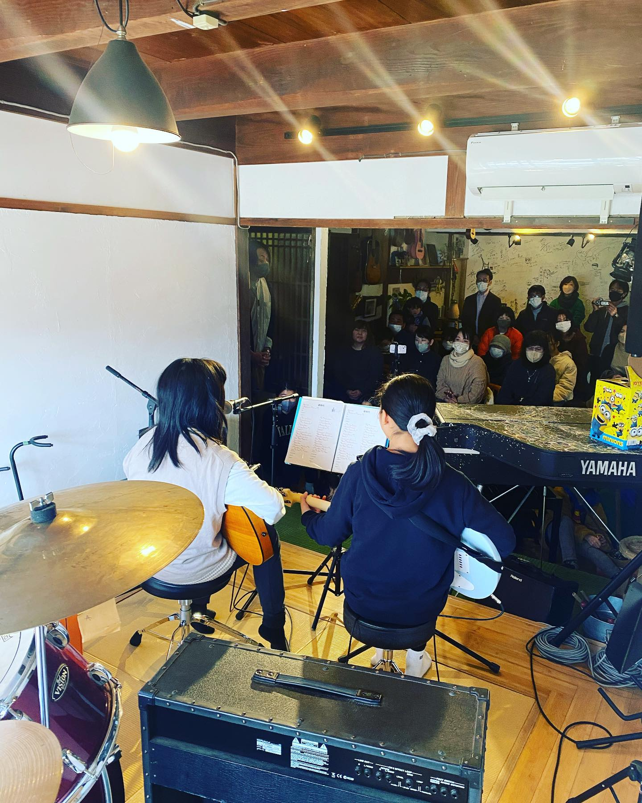
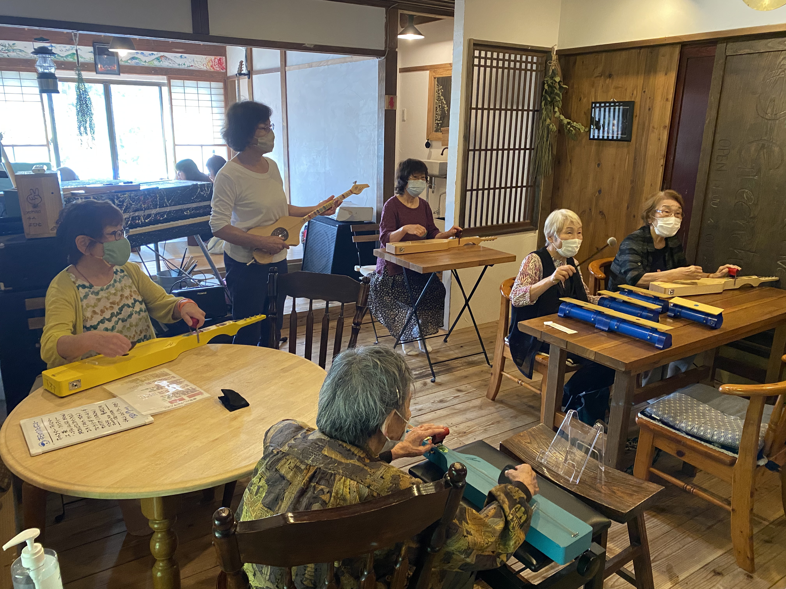
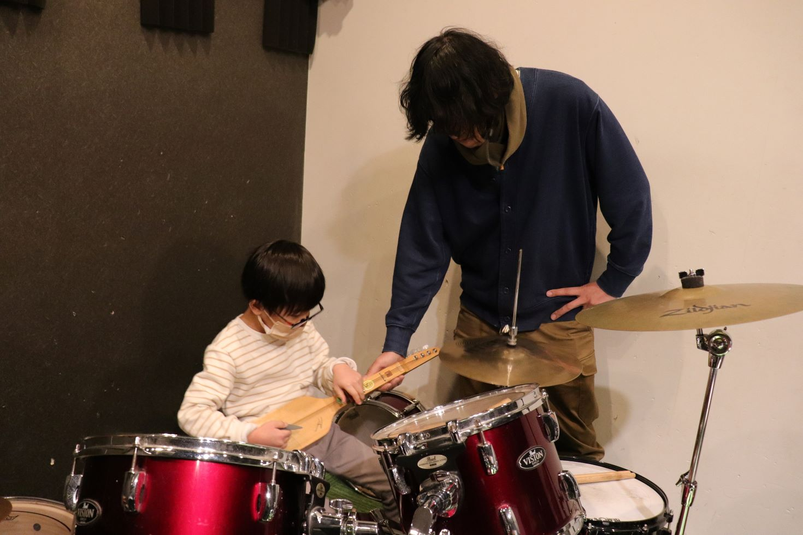
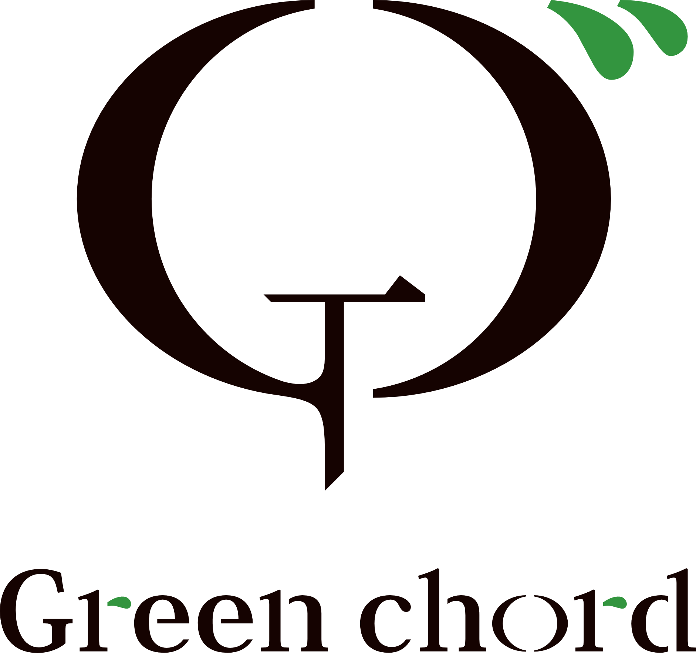
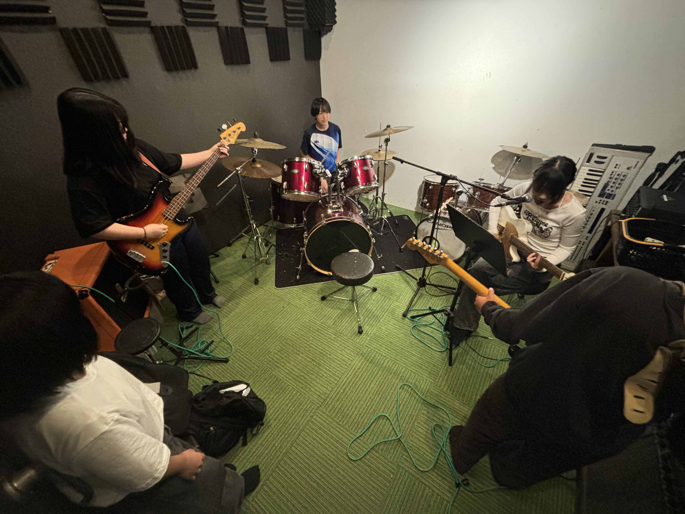

- Type防音スタジオ（古民家改装）
- Capacityバンド編成可 / 5〜6名程度
- Use練習 / レッスン / 配信 / 簡易ライブ
- Wi-Fi完備




3歳の子どもから、80代のシニアまで。
世代を超えて、音が鳴り響いています。

森のそばで、音と暮らす。
おとなも、子どもも。
糸島の小さな音楽拠点。
糸島の山間にある古民家から生まれた、音の拠点。
2015年のオープン以来、
音楽を愛する人と、この土地で暮らす人々が交わりながら、
ゆっくりと文化を育ててきました。
ここは、うまさを競う場所ではなく、
生活の中に「音」を取り戻す場所です。



3歳の子どもから、80代のシニアまで。
世代を超えて、音が鳴り響いています。

森の静寂に包まれた防音スタジオ。
ここではバンド練習だけでなく、
窓の外の緑を背景にした小さなライブやセッションも行われます。
演奏する人と聴く人の境界線が溶けるような、親密な時間です。

ビンテージのアンプや、手入れされたドラムセット。
プロユースの機材も揃え、
「いい音」で鳴らす喜びを提供します。
機材の詳細リストは現地にてご確認ください。
主な常設機材
大自然の下で、音と遊ぶ。
Greenchordから始まった、野外音楽イベント。
2025年、ひとつの区切りを迎えました。
けれど、これは終わりの始まり。
新たな「祭」に向けて物語はまだ続いていきます。

音楽を通じて、人と地域がつながる。
Greenchordは、そんな風景を静かに育ててきました。
そしてその先にあるのは、もっと大きな「祭り」のような時間。
まだ名前のない、新しい音の集まりへ。
日々の教室の様子や、スタジオの空き状況、
イベントのお知らせはInstagramで更新しています。